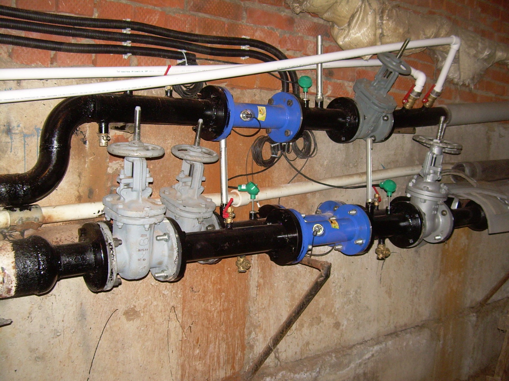
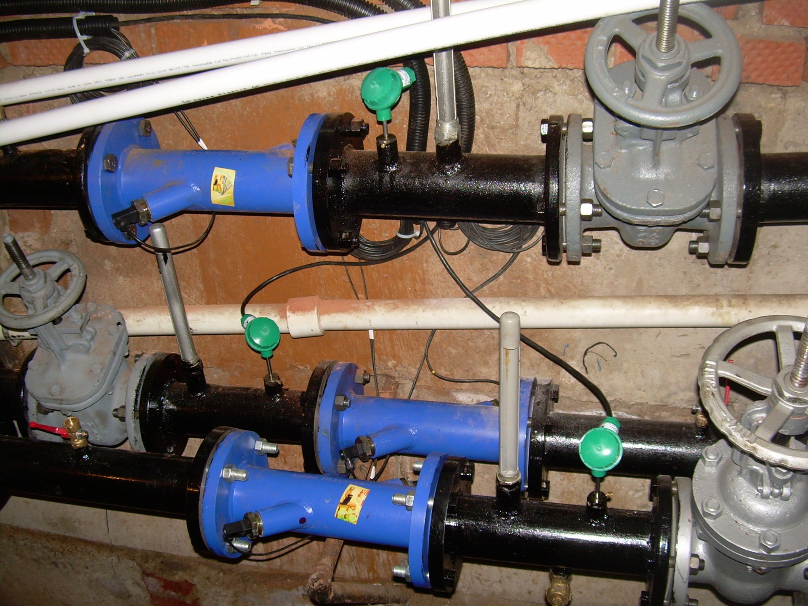
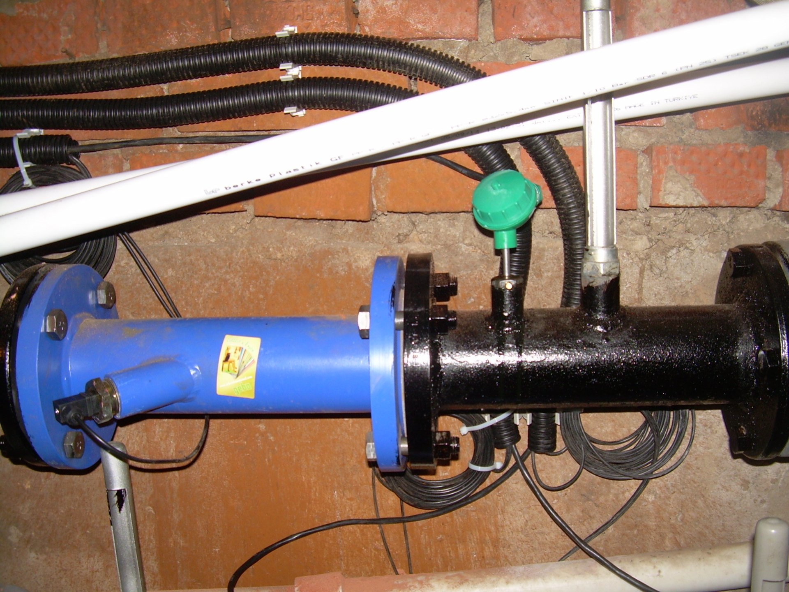
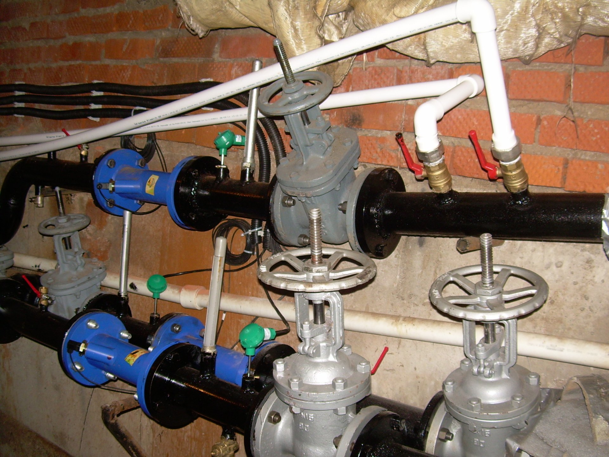
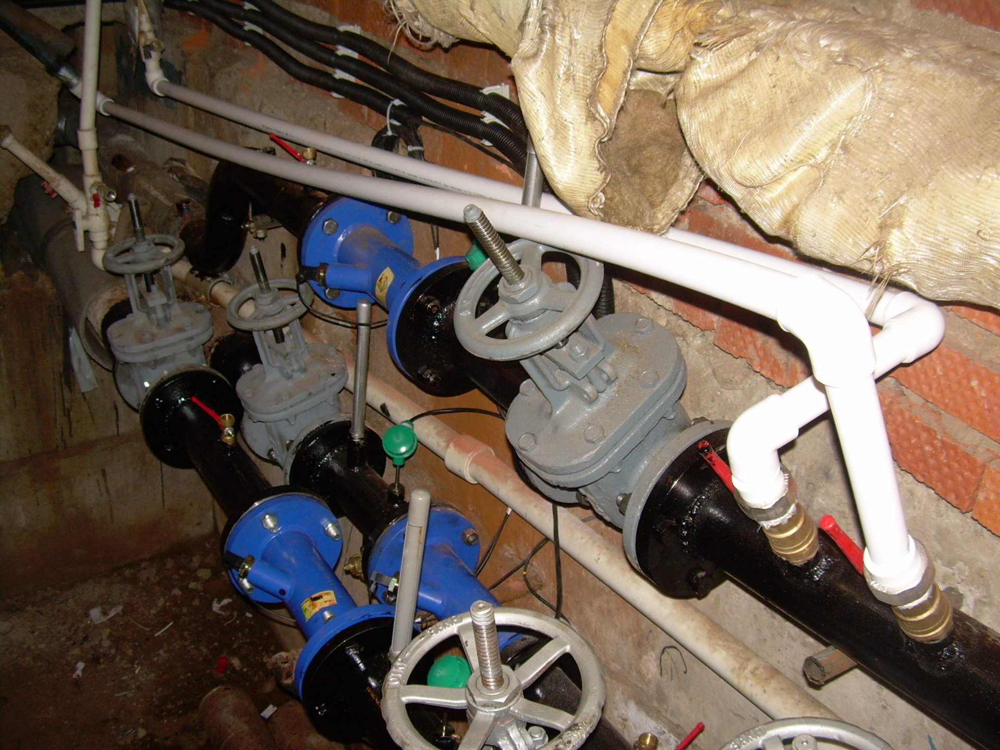
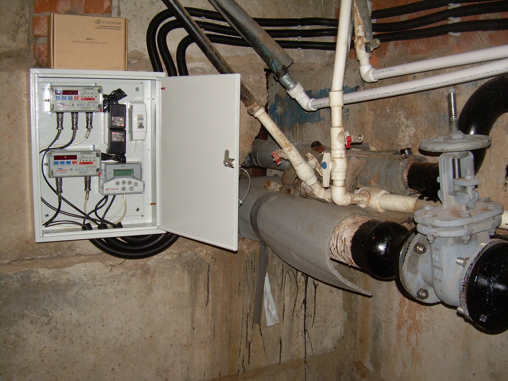
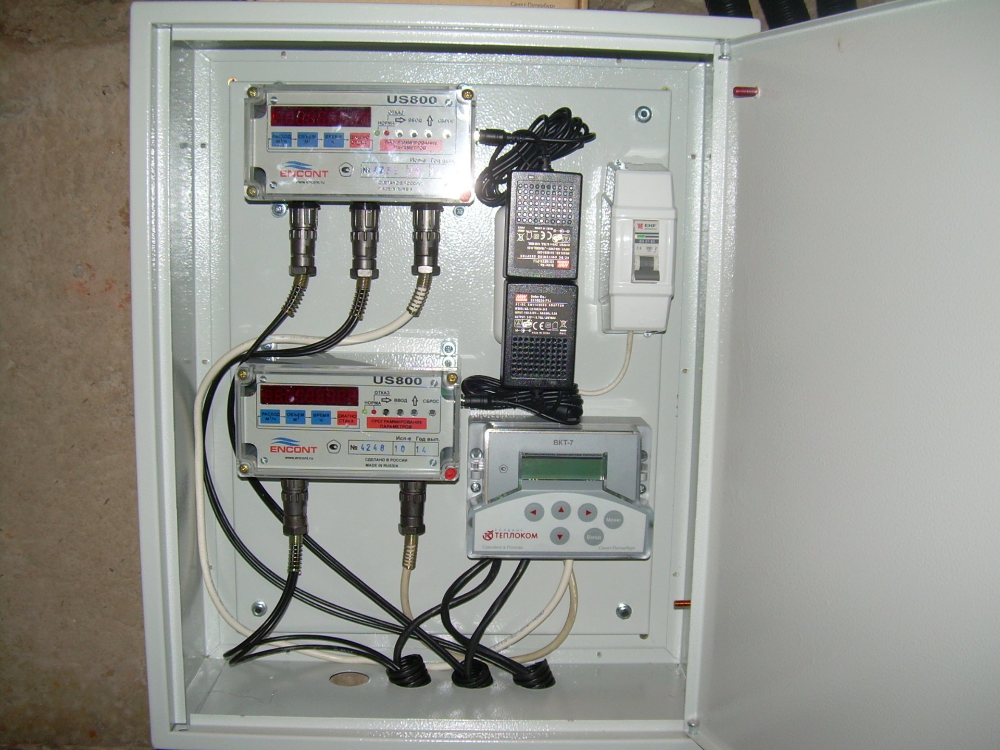

Задача
Организация коммерческого узла учёта тепла и ГВС
Нужно было организовать коммерческий учёт тепла и ГВС, чтобы расчёты с теплоснабжающей организацией шли по приборам.
Исходные параметры объекта
- отопление: температурный график 105–70 °С, нагрузка 0,44537 Гкал/ч, диаметры Т1 и Т2 — Ду80;
- ГВС: температурный график 60 °С, нагрузка 0,08154 Гкал/ч, диаметр Т3 — Ду50;
- давление в трубопроводах — до 1,6 МПа.
Объект имеет три трубопровода с разными диаметрами: отопление Ду80 и ГВС Ду50. При этом температурный график отопления высокий — до 105 °С. Требовалось подобрать приборы, которые обеспечат точность на каждом участке и сведут все данные на один вычислитель.

Решение
Комплексный монтаж и пусконаладочные работы
Проект разработали на основании техусловий и обследования существующих сетей.
Измерительный комплекс
Узел собран на базе теплосчётчика ТСК71-08 в составе:
- вычислитель ВКТ-7-03 — 1 шт.;
- ультразвуковые преобразователи расхода US800 (Ду80 для отопления и Ду50 для ГВС) с электронными блоками;
- комплекты термопреобразователей КТС-Б Pt100 для Ду80 и Ду50;
- запорная арматура, манометры МП4-У и фильтры.
Для отопления применили преобразователи US800 Ду80, для ГВС — Ду50. Это позволило перекрыть расчётные расходы и обеспечить измерение на высокотемпературном графике.


Монтаж
- установка преобразователей расхода на трёх трубопроводах с соблюдением прямых участков;
- монтаж термопреобразователей в защитных гильзах;
- сборка шкафа УУТЭ с вычислителем, электронными блоками и автоматами;
- прокладка экранированных кабельных линий в металлорукавах;
- монтаж запорной арматуры и манометров.


Наладка
Выполнили гидравлический расчёт. В память вычислителя внесли конфигурацию для трёх трубопроводов, диаметры и веса импульсов. Провели комплексное опробование в течение 24 часов, контрольные замеры — 72 часа. Таблицу базы данных настройки согласовали с теплоснабжающей организацией.
Все работы выполнены по руководствам эксплуатации вычислителя, расходомеров и термопреобразователей, а также по Правилам коммерческого учёта тепловой энергии и теплоносителя № 1034.
Результат
Введённый в эксплуатацию узел учёта тепла и ГВС
Узел учёта введён в эксплуатацию и принят на коммерческий расчёт. Заказчик получил:
- одновременный учёт тепловой энергии и объёма теплоносителя по трём трубопроводам: Т1, Т2 (отопление), Т3 (ГВС);
- раздельный контроль отопления и горячего водоснабжения;
- архивирование параметров в энергонезависимой памяти вычислителя;
- считывание данных через встроенный интерфейс RS-232, а также с помощью накопительного пульта НП-4А и принтера;
- защиту приборов от внешних воздействий — шкаф УУТЭ.
Узел работает в штатном режиме. Показания стабильны и соответствуют фактическим параметрам теплоносителя.

